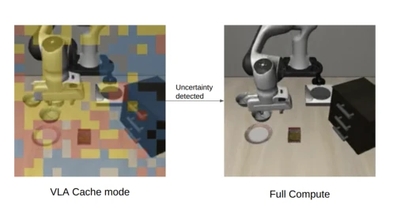
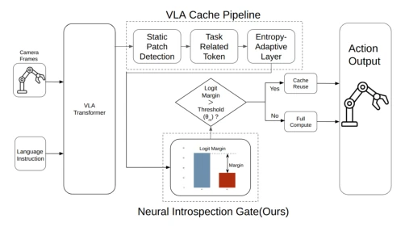
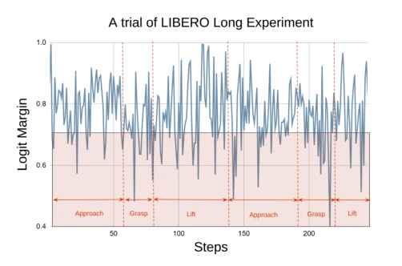
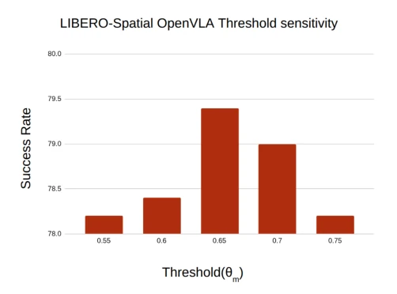
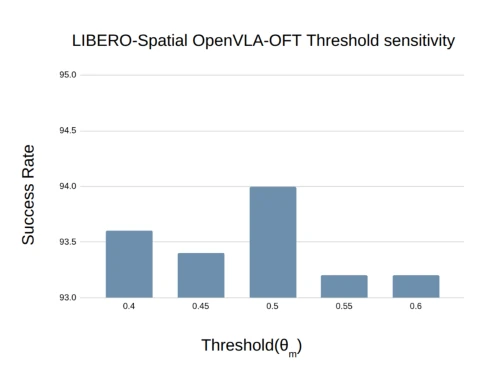
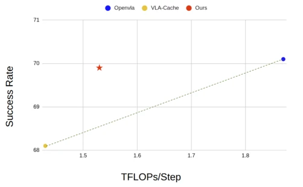

This paper adds a "self-reflection" switch to VLA inference acceleration, effectively filling a blind spot in VLA-Cache [4]. VLA-Cache only checks if pixels change, not if the model is uncertain, prone to failure at critical moments, such as when visual changes are small but action decisions are critical during grasping alignment. The authors use logits margin as a judge; when the model itself is unsure, it does not cache but recomputes. This approach is clever, requires no training, zero cost, and can adapt to task difficulty. However, there is a minor flaw: the margin only reflects action prediction uncertainty and cannot distinguish whether it is caused by caching or the model's inherent difficulty. Moreover, the threshold requires tuning, although robustness is acceptable. Overall, it is a patch on existing acceleration schemes with good effects, but do not expect it to solve all hallucination problems. Simulation verification has not yet been conducted on real robots, and there is a one-step reaction delay; actual deployment needs to consider calibration costs.
VLA models [1] directly map vision and language to actions, with strong generalization but expensive computation. Real-time control requires 10-20Hz, and 7B models struggle to run it. VLA-Cache [4] utilizes inter-frame redundancy, reusing KV states via pixel similarity, but this is merely an "observation space heuristic". It does not know if the model is internally uncertain. For example, during grasping alignment, visual changes are small but action decisions are critical, and caching may introduce errors. Existing methods such as FastV [16] or Pyramiddrop [17] focus on pruning, while VLA-Cache [4] focuses on caching, but both lack internal model confidence signals. A mechanism is needed to perceive the model's "hesitation" to dynamically decide whether to refresh the cache, avoiding the accumulation of errors from stale representations. Especially in long-horizon tasks, error accumulation leads to task failure, thus introducing a neuro-inspection mechanism is crucial.

Fig. 1: Overview. VLA-Cache decides cache reuse based on observation-space patch similarity alone, risking stale repre- sentations at critical moments. Blue: static tokens, Yellow: task-relevant, Red: overlapping. Gated VLA-Cache addition- ally inspects the model’s own logit margin to adaptively invalidate the cache when the model’s confidence drops.
Overall based on VLA-Cache [4]'s three-stage flow: static block detection, task-related filtering, entropy-adaptive reuse. The innovation lies in adding a "neuro-inspection gating". During action decoding, compute the probability difference between top-1 and top-2 action tokens (logit margin). If the margin is below threshold θm, it indicates the model hesitates on the action, immediately invalidate the entire KV cache, and execute full forward propagation; otherwise, follow VLA-Cache's caching strategy. This signal is a byproduct of decoding, zero cost. The gating has a one-step reaction delay (using t-1 margin to decide t cache), but can adapt to task difficulty. Simple tasks have high margin, more cache; complex tasks have low margin, more recomputation. No extra parameters are needed, just calibrate the threshold once.

Fig. 2: Gated VLA-Cache architecture. At each step t, the logit-margin gate evaluates the action confidence from step t−1. If the margin signals low confidence, the cache is invalidated and full inference runs for step t. Otherwise, the standard VLA-Cache pipeline proceeds.
Tested on LIBERO four suites (Spatial, Object, Goal, Long) with OpenVLA [1] and OpenVLA-OFT [5]. Metrics are Success Rate (SR) and Compute (TFLOPs). Results: On long-horizon tasks like Goal and Long, VLA-Cache [4] accuracy drops significantly; Gated VLA-Cache recovered over 100% of the accuracy loss, while compute was only slightly higher than VLA-Cache, still 18% lower than Full Inference. On simple tasks like Spatial, gating almost never triggers, maintaining acceleration effects. OpenVLA-OFT is inherently robust, with small gating impact. Ablation shows threshold θm is stable within a certain range.

Fig. 5: Gating trace for a representative LIBERO-Long episode. The logit margin (blue) dips during critical manip- ulation phases (grasping objects). Pink regions mark gating events. Each manipulation has three phases: approach, grasp, and lift.

Fig. 6: Threshold sensitivity on LIBERO-Spatial (Open- VLA). The method exhibits a broad plateau of near-optimal performance.

Fig. 7: Threshold sensitivity on LIBERO-Spatial (OpenVLA-OFT). The method exhibits a broad plateau of near-optimal performance.
其他图片Other Figures

Fig. 4: Accuracy compute trade off on average score of four LIBERO Benchmark(OpenVLA). Gated VLA-Cache (star) lies above the line connecting Full Inference and VLA- Cache, indicating Pareto-optimality: it achieves full-inference accuracy at substantially lower compute.